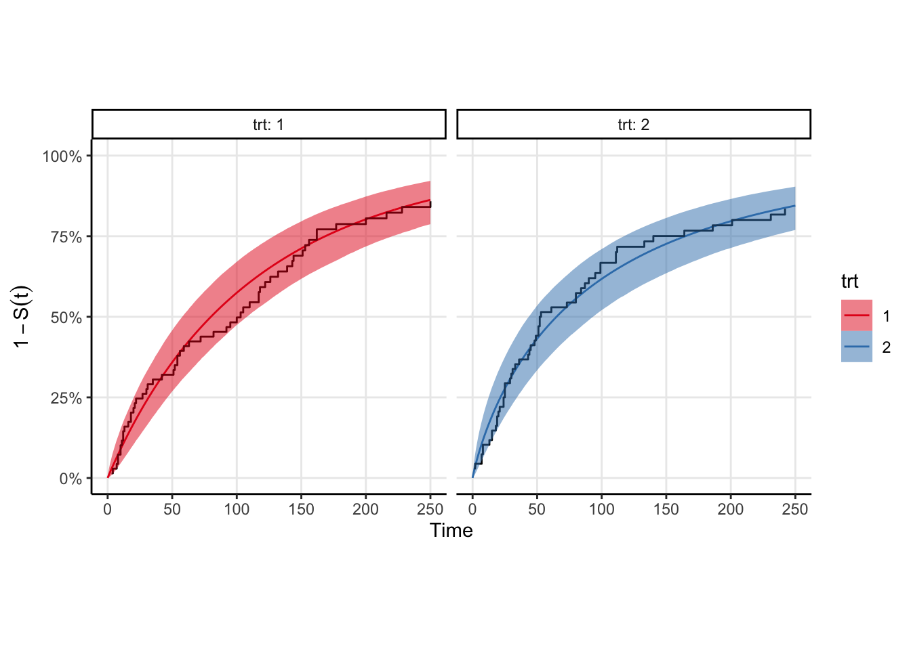
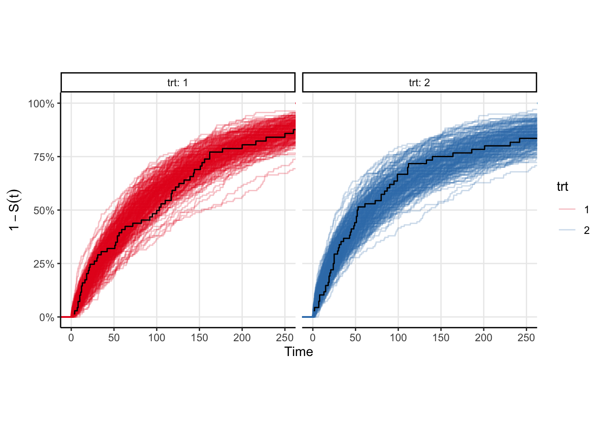

trt strata in the veteran dataset. The curves look roughly exponential meaning the generalized gamma should provide a good fit.
A couple weeks back, I posted a little something something on the Shifted Beta Geometric distribution. That distribution is used in estimating churn in contractual settings (think Netflix, or any other service whereby you renew your service monthly). Its a nice model, but I want something more flexible.
I’ve been aware of the generalized gamma distribution through Jordan Nafa (who likely uses it for some very interesting decision theory applications). Briefly, if \(T\) is the event time, then let \(Y=\log(T)\), and \(Z = (Y-\mu)/\sigma\). Then \(Z\) has the following density
\[ f(z ; k)=\frac{k^{k-1 / 2}}{\Gamma(k)} \exp \left(k^{1 / 2} z-k e^{k^{-1 / 2} z}\right)\]
and \(T = \exp(Y)\) is distributed according to the generalized gamma distribution . Here, \(-\infty \lt z \lt \infty\), \(-\infty \lt \mu \lt \infty\), and \(\sigma, k>0\). For more on the generalized gamma, especially for use in survival analysis, see Statistical Models and Methods for Lifetime Data by Jerry Lawless (1982).
The nice thing about the generalized gamma is that the exponential, gamma, and weibull distributions – all common parmetric survival likelihoods – are special cases (and the log normal is a limiting distribution) 1.
That is especially nice for me. I’m working on some life time value modelling and it would be great if I didn’t have to try several models. Instead I can just use the generalized gamma and hope it fits well enough if the data are best approximated via one of the aforementioned survival functions.
In this post, I want to implement some survival analyses using the generalized gamma. Let’s get started.
We’ll need some data. Rather than simulate it myself, I’ll use the veteran data from {survival}. The survival function is roughly exponential, which is good because we know the generalized gamma can fit it in principle. There is a trt indicator in these data, so we’ll fit one survival curve to each strata. Shown below are the Kaplan-Meir non-parametric estimates for these data. Rather than plot the survival curve \(S(t)\), I choose to plot \(1-S(t)\) because my brain groks the plot easier as “the proportion of individuals in a cohort who would have experienced the outcome by time \(t\)”. The log of this quantity is the cumulative hazard, but I don’t know if \(1-S(t)\) has a proper name. I mean … it is technically an estimate of the CDF of the event time distribution.
trt strata in the veteran dataset. The curves look roughly exponential meaning the generalized gamma should provide a good fit.
Stan does not have an implementation for the generalized gamma, so we’ll have to write that ourselves in the functions block.
_lpdf, _lcdf, and _lccdf Implementations in StanTo do parametric survival analysis in Stan, we need three functions:
generalized_gamma_lpdf so we can increment the log posterior density when we observe an outcome,generalized_gamma_lccdf so we can increment the log posterior density when we observe a censoring event, andgeneralized_gamma_lcdf so we can implement the _lccdf.The first and third functions are implemented already by Krzysztof Sakrejda in this repo. The _lpdf and _lcdf are given, so now we just need the complementary cdf function _lccdf. Since Stan works on the log probability scale, we need to return the the log of the complementary cdf. Since we have the log cdf we could just do
real generalized_gamma_lccdf(real x, real k, real mu, real sigma) {
return log(1 - exp(generalized_gamma_lcdf(x | k, mu sigma)));
}Stan has a nicer function to do this called log_diff_exp which can be used to take differences in exponential space and then take the log of the result.
Additionally, we can create a random number generator for the generalized gamma distribution by noting that flexsurv’s implementation of the generalized gamma is equivalent to ours if we let \(Q=1/\sqrt{k}\). Our functions block then looks like
functions {
real generalized_gamma_lpdf(real x, real k, real mu, real sigma) {
real w;
real d;
w = (log(x) - mu) / sigma;
d = (k - .5) * log(k) - log(sigma) - lgamma(k) + (sqrt(k) * w - k * exp(1 / sqrt(k) * w)) - log(x);
return d;
}
real generalized_gamma_cdf(real x, real k, real mu, real sigma) {
real w;
real d;
w = (log(x) - mu) / sigma;
d = gamma_p(k, k * exp(w / sqrt(k)));
return d;
}
real generalized_gamma_lcdf(real x, real k, real mu, real sigma) {
real w;
real d;
w = (log(x) - mu) / sigma;
d = log(gamma_p(k, k * exp(1 / sqrt(k) * w)));
return d;
}
real generalized_gamma_lccdf(real x, real k, real mu, real sigma) {
return log_diff_exp(0, generalized_gamma_lcdf(x | k, mu, sigma));
}
real generalized_gamma_rng(real k, real mu, real sigma) {
real Q = 1.0 / sqrt(k);
real gamma = gamma_rng(Q^-2, 1);
real w = log(Q^2 * gamma) / Q;
return exp(mu + sigma * w);
}
The model fits fairly quickly (4 chains in parallel takes <2 seconds on my M1 Pro macbook pro). We can easily plot the survival curve against the Kaplan-Meir estimate to compare, however a better comparison would be to draw samples from the event time distribution and compute the ecdf of those samples. That plot is shown below, and is equivalent to a posterior predictive check in the case where there is no censoring. You can see that the KM estimates look similar to the ecdfs, which is good enough for me.
Running MCMC with 4 chains, at most 10 in parallel...
Chain 1 finished in 1.9 seconds.
Chain 2 finished in 1.9 seconds.
Chain 3 finished in 1.9 seconds.
Chain 4 finished in 1.9 seconds.
All 4 chains finished successfully.
Mean chain execution time: 1.9 seconds.
Total execution time: 2.0 seconds.

Left as an exercise to the reader.↩︎